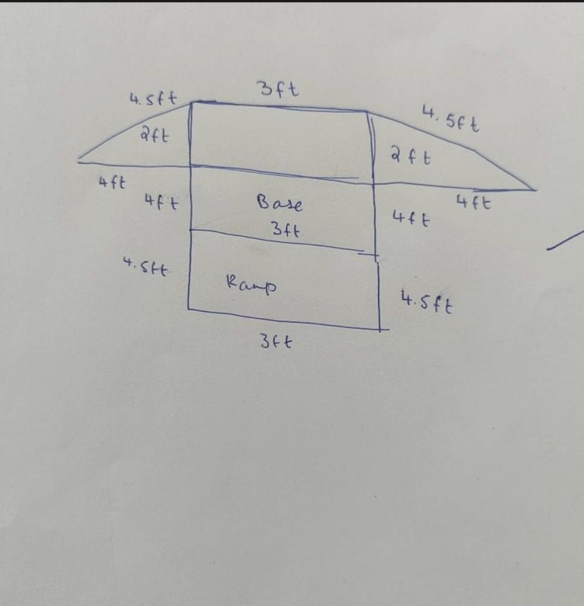
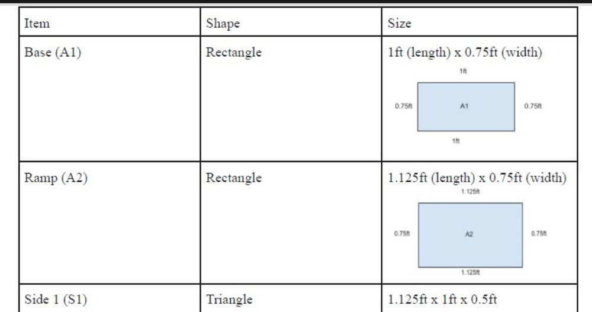

The situation
Designing a product at school is not just about creativity. It is where skills from different subjects come together. In a recent unit, "Designing for Inclusivity", students were tasked with creating a product that promotes accessibility.
What I tried
One student came up with an adjustable, portable wooden ramp to help individuals with mobility challenges navigate public transportation more easily. After sketching and 3D modelling, the student moved on to an essential step: creating a cut plan for the woodworking project. They needed to work out how to cut the wooden pieces efficiently while minimising waste.
What happened
That was when I saw something amazing. The student instinctively applied their understanding of NETs from Mathematics, the unfolded 2D shapes of 3D objects, to lay the pieces out flat before cutting. Every cut was precise, the materials were used optimally and waste was reduced.
Watching them transfer their maths skills into real-world design was a powerful moment.
What I learned
Design education is about making connections. When students start seeing how different subjects intertwine, learning becomes more than theory: it becomes practical, relevant and deeply impactful.
A big shoutout to Afreen Shaikh for always motivating us as a team to grow, and to Aprajita Ralli for her invaluable guidance in achieving high-quality learning and teaching.

